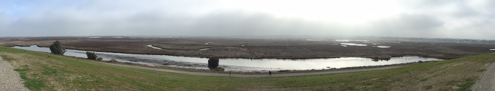
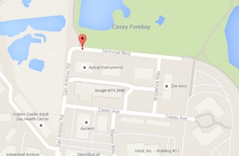
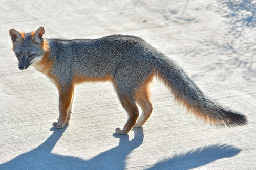
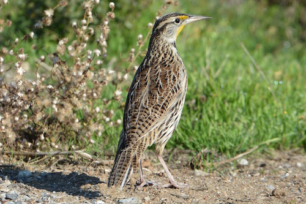

{% include preamble.html %}

        <div class="container-fluid">
            <div class="row">
                <h2 style="padding-left: 0.5em">Palo Alto Baylands &#x1F415;</h2>
            </div>

            <div class="row">
                
            </div>

            <div class="row">
                <br />
                <div class="col-md-9">
<br />
Park web page: <a target="_blank" href="http://www.cityofpaloalto.org/gov/depts/csd/parks/preserves/baylands.asp">http://www.cityofpaloalto.org/gov/depts/csd/parks/preserves/baylands.asp</a>
<br /><br />
Parking on Terminal Blvd 37.433596,-122.099722 ({% include maps.html latlon="37.433596,-122.099722" %})

<!-- <a target="_blank" href="https://www.google.com/maps/place/37%C2%B026'00.9%22N+122%C2%B005'59.0%22W/@37.433596,-122.1019107,17z/data=!3m1!4b1!4m2!3m1!1s0x0:0x0">37.433596,-122.099722</a>
-->
<br /><br />
My usual route:<br />
<ul>
    <li><a target="_blank" href="http://www.mapmyhike.com/workout/1256707369">5.8 miles, 2 hrs</a></li>
</ul>

The trail is very flat, so there's no elevation gain to worry about.
<br /><br />
&#x1F415; The trail is dog friendly (leash required), so feel free to bring your dog.<br /><br />
Don's photos: <a target="_blank" href="https://www.flickr.com/photos/regexman/albums/72157672070159121">https://www.flickr.com/photos/regexman/albums/72157672070159121</a>

                </div>
                <div class="col-md-3">
                    <a target="_blank" href="https://www.google.com/maps/place/37%C2%B026'00.9%22N+122%C2%B005'59.0%22W/@37.433596,-122.1019107,17z/data=!3m1!4b1!4m2!3m1!1s0x0:0x0"></a>

                </div>

            </div>

            <div class="row">
                <br /><br />
                <div class="col-xs-6">
                    
                </div>
                <div class="col-xs-6">
                    
                </div>
            </div>


        </div> <!-- /.container-fluid -->

{% include postamble.html %}
